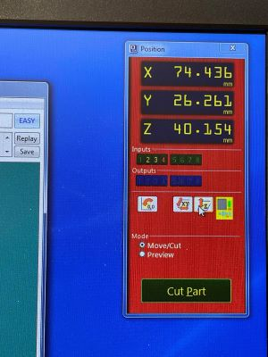

ShopBot
This is the sign that I designed and produced.
About the ShopBot
Assignment
This week´s assignment was to watch this video made by Matt Hatcher and follow the instructions on how to design a sign and produce it in the ShopBot.
2.5D is usually used when making signs, so I would compare it to making a relief. Router travels by x- and y-axis and only uses the z-axis to go in and out of toolpaths. To do a 3D work you would have to design a 3D model.
Designing in VCarve
VCarve
I used the program VCarve pro to design my sign.
I did some experimenting in the beginning, f.ex. tested how to draw a perfect rectangle by choosing the rectangle and holding the Control button when clicking and drawing with the mouse.
Job setup
I began by filling in the size of the material I wanted to use. I wrote 382mm x 200mm. It is very important to always measure the thickness of the material because it can vary. I set the thickness to 17.5mm. I set the xy origin position to bottom left and made sure that Use offset was NOT chosen. I set the z origin to the top of the material. I set Modeling resolution to Standard and chose the MDF look.
I drew an ellipse. Then I wrote a text by clicking on the big T. When the text was on the plate I resized it by using the resizing arrow, clicked on the text and dragged one corner to make it smaller. By holding the Shift key whilst doing that it centered and rezised it all.
To use a ruler as a measurement guide I chose the normal arrow (for the mouse), left-clicked on the ruler and held it down as I dragged it to where I wanted to have a guide line.
On the right side of the screen I double clicked on the icon near material setup and adjusted the following:
Under Rapid Z gaps above material I clicked Above material and set Clearance Z1 and Plunge Z2 to 5mm. In the video this was set to 0.5 inhces, which equals 12.7mm, but a co-teacher of mine said that it would be okay to set it to 5mm since the material I was using was even.
Home/start position was set to: x=0, y=0 and z=20 (mm). The z should never be set to 0. Then I clicked on ok.
Key shortcuts
By pressing fn and F12 the toolpath settings open up and by pressing fn and F11 these settings are closed and the drawing tab appears again.
Creating a toolpath
The next step was to click on the outline and then select Profile toolpath. The start depth should always (usually) be set to 0. I wanted to cut the material in two passes, so the cutting depth should be around just over half of the thickness of the material in each pass. So I set the cutting depth to 9mm.
Selecting the right tool
Under Tool I clicked on Select and chose the 0.25 inch downcut endmill. My collegue, Eyþór Halldórsson, assisted me on preparing and operating the Shopbot. He told me that I should keep the cutting depth within the diameter of the tool. Spindle speed should not be changed. In the video it is recommended that the feed rate (speed) should be between 2 and 3 inches per second, to be safe.

Tabs, Leads and Ramps
Tabs, Leads and Ramps
I chose Machine vectors to be outside. Then I added Tabs. Below the Tabs option there were a few settings and I chose the Leads option and checked in the box by Add leads. By activating it, there will be a nicer cut where the tool is going to plunge in because it begins the plunge just a little bit outside of the path and goes smoothly down in a tiny curve. Next to the Leads option there is another option called Ramps. I checked in Add ramps to toolpath. It is similar to Leads but works in the Y direction. Both Ramps and Leads work well whith the preset settings.
Saving and previewing path
Finally, I clicked on Calculate, gave the path a name and saved it. To preview it i had to click on the name and then choose Preview the selected toolpath. When I previewed it I realized that I had made a mistake. It did not cut through because I wrote the wrong size in Cut depth.
I reset (cleared) the preview and opened the drawing again, because I decided to make the ellipse/outline smaller. Then I put tabs on again and increased the cut depth, so that it was 18mm. The material was 17.5mm so I added 0.5mm to the cutting depth. Then I calculated and previewed it again and everything looked ok.
The next step was to select the vectors in the inlay and click on Quick ingrave toolpath, which is a toolpath that creates depth and makes the sign become a relief. When I planned on choosing the same V-bit as in the video, I could not find the same size for 60 degrees. The same thing happened when I followed the directions on how to use the VCarve settings, so I chose a 1/2" 60 degree V-bit and set the depth to 6mm before calculating.
Prepairing the ShopBot
In the video it says that it´s a good idea to reset the machine between jobs just by switching the red switch on and off. Then I fastened the material in four corners with screws. I the ShopBot 3 program an a control panel opened up. On it there is a yellow button, called To move tool and I clicked on it. There I could move the spindle around manually. I moved it to a spot where I could safely do a heat up routine without the spindle or router bit hitting anything.
.................
I moved the spindle to a good spot where I could easily acces the spindle to change the router bit. I used a special tool and a ____ to loosen the router bit that was in the machine. For safety reasons this special tool is fastened to the machine with að key and I had to take it out of the switch when I changed the bit. When this key is taken out of the switch, the machine cannot operate.
Then I moved the spindle over the material and then pressed Escape to leave the manual
After that I set x and y to zero manually. When the router bit was over the right spot, I pressed Escape and set this point to zero by clicking on Zero and then Zero to x and y. Then I chose Jog and Jog home.
Prepairing to set Z to zero
Under Cuts I selected Zero z axis to zero plate. Then I placed a metal plate, that is fastened to the machine, under the bit. The machine lowered it´s until the bit touched the plate. The machine did this two times. When they touched, a circuit let the machine know and the zero point was set. Then I returned the metal plate to the slot, where it is always kept.
Setting the x and y to zero
I moved the spindle to the left lower corner of the plate I wanted to cut. When I had found the right spot I clicked on the X and Y button (the middle button).

Maximum spindle speed for cutting wood
The maximum spindle speed for cutting wood is 13.000.
Performing the cut
I turned the dust collector on before I made the ShobBot mill and cut. I clicked on Cut part and open the right file.
Important
Never change any settings in this window!
Cutting depth
Cutting depth and splinters
I wanted to avoid deep cuts into the sacrificial layer, so I only added 0.5mm to the thickness of the material. That was not quite enough because when I loosened the screws and checked the backside, the cutting path was laced with splinters. I had to sand them all to make the sign smooth, but that was okey because I also had to file and sand the leftovers of tabs after I chiseled the sign out of it´s frame.